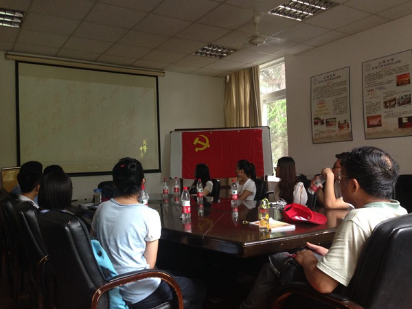
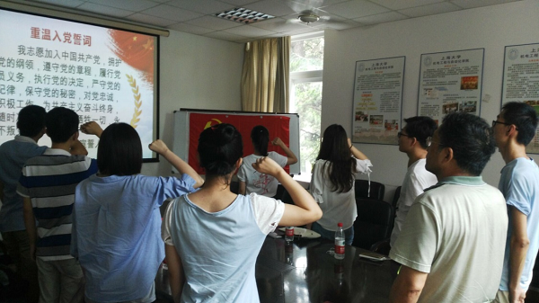
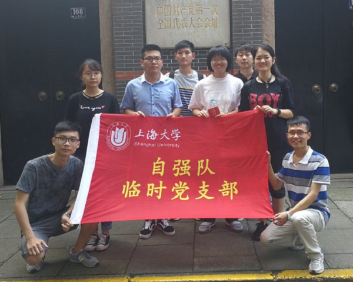

2017年7月1日，为庆祝中国共产党建党九十六周年，响应校党委的号召，上海大学自强队临时党支部开展了“缅怀党的历史，重温入党誓词”七一主题党日活动。上海大学自强队指导教师黄慎之老师、上海大学自强队临时党支部书记叶立俊同学、上海大学自强队部分学生党员、入党积极分子、发展对象及团员代表共同参加了此次活动。
上午10时，师生们共同观看了历史文献纪录片《筑梦中国——中流击水》，回顾了自鸦片战争以来中国人民在屈辱苦难中奋起抗争，为实现民族复兴进行的种种探索，特别是中国共产党领导全国各族人民争取民族独立、人民解放和国家富强、人民幸福的光辉历程。 
随后，在自强队临时党支部书记叶立俊的主持下，全体师生开展了党史知识竞赛活动，本次知识竞赛围绕党章、党史、十八大会议内容、中国梦等主题开展，活动设置了必答、抢答和猜红歌三个环节。参赛过程中，现场气氛热烈，竞争激烈，让同学们进一步加深了对中国共产党的了解，同时激发了大家对党史、国情自主学习的热情。活动过程中，有43年党龄的自强队指导教师黄慎之老师向队员们回顾起了自己艰苦朴素、不懈奋斗的青年历程，使队员们深刻体会到了一位老党员内心深处对共产主义的坚定信念。活动最后，全体与会党员、入党积极分子及发展对象在黄慎之老师的带领下，面对鲜红的党旗，高举右手，庄严宣誓。 
下午，怀着对革命先烈的崇敬之情，自强队部分队员代表在自强队临时党支部书记叶立俊的带领下，来到了位于上海市黄浦区兴业路76号（原望志路106号）的中共一大会址参观学习，一同缅怀英烈，感受革命先辈建立中国共产党的艰辛历程。队员们在场馆志愿者的引导下，一边聆听讲解，一边认真阅览展厅内丰富的革命文物、手稿、照片、图片以及音像资料等，参观过程中，队员们感悟到了在中共初创时期共产党人坚定的信仰、执着的求索、艰苦的奋斗和不屈不挠的精神。
不忘历史，方知砥砺前行。厚重而庄严的历史回顾，带给大家深深的心灵震撼和油然而生的敬畏之情。通过本次党日活动，同学们纷纷表示，自身的责任和使命得到了进一步的明确，也会继续秉持自强不息的精神，以自己的实际行动感化身边的同学，在自强队五彩的乐谱上谱写属于自己青春奋斗的主旋律。
上海大学自强队